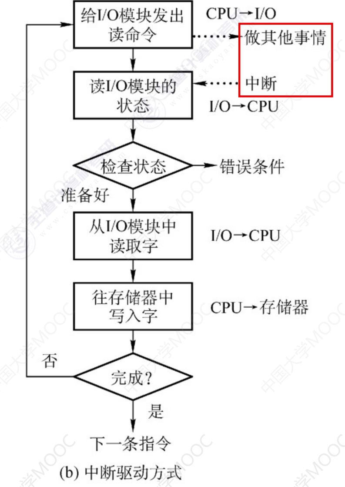

IO控制器
IO控制器
概述
IO设备的机械部件主要用来执行具体I/O操作。
IO设备的电子部件通常是一块插入主板扩充槽的印刷电路板。
I/O设备的电子部件（I/O控制器）
CPU无法直接控制IO设备的机械部件，因此IO设备还要有一个电子部件作为CPU和I/O设备机械部件之间的中介，用于实现对IO的控制。这个部件就是I/O控制器，又称设备控制器、CPU可控制I/O控制器，又由I/O控制器来控制设备的机械部件。
I/O设备控制器的功能：
- 接受和识别
CPU发出的命令：如CPU发来的read/write指令，I/O控制器中会有相应的控制寄存器来存放命令和参数 - 向
CPU报告设备状态：I/O控制器中会有对应的状态寄存器，用于记录I/O设备的当前状态。如：1表示空闲，0表示忙碌 - 数据交换：
I/O控制器中会设置相应的数据寄存器。输出时，数据寄存器用来暂存CPU发来的数据，之后在由控制器传送设备。输入时，数据寄存器用于暂存设备发来的数据，之后CPU从数据寄存器中取走数据 - 地址识别：类似于内存地址，为了区分设备控制器的寄存器，也需要给各个寄存器设置一个特定的地址。
IO控制器通过CPU提供的地址来判断CPU要读写的是哪个寄存器
I/O控制器的组成

CPU与控制器的接口：用于实现CPU与控制器之间的通信。CPU通过控制线发出指令；通过地址线指明要操作的设备；通过数据线来取出（输入）数据，或放入（输出）数据。
I/O逻辑：负责接受和识别CPU的各种指令（如地址译码），并负责对设备发出指令。
控制器与设备接口：用于实现控制与设备之间的通信。
- 一个I/O控制器可能会对应多个设备
- 数据寄存器、控制寄存器。状态寄存器可能有多个（如：每个控制/状态寄存器对应一个具体设备），且这些寄存器都有相应的地址，才能方便CPU操作。有的计算机会让这些寄存器占用内存地址的一部分，称为内存映像I/O；另一些计算机则采用I/O专用地址，即寄存器独立编址。
内存映像I/O和寄存器独立编址

I/O控制方式
程序直接控制方式
以读操作为例：
- CPU向控制器发出指令，设备启动，并且状态寄存器置为1（未就绪）
- 轮询检查控制的状态（其实就是在不断执行程序的循环，若状态位一直是1，说明设备还没准备好要输入的数据，于是CPU会不断的轮询）
- 输入设备准备数据后将数据传给控制器，并报告自身状态。
- 控制器将输入的数据放到数据寄存器中，并将状态该为0（已就绪）。
- CPU发现设备已就绪，即可将数据寄存器的内容读入CPU的寄存器中，在把CPU寄存器中存放的内容放入内存。

特点：
- CPU干预的频率：很频繁，I/O操作开始之前，完成之后需要CPU介入，并且在等待I/O完成过程中CPU需要不断地轮询检查。
- 数据传输单位：每次读写一个字。
- 数据流向：
- 读操作（数据输入）：I/O设备 -> CPU -> 内存
- 写操作（数据输出）：内存 -> CPU -> I/O设备
- 每个字的读/写都需要CPU的帮助
- 主要的优点和缺点：
- 实现简单。在读/写指令之后，加上实现循环检查的一系列指令即可（因此才称为程序直接控制方式）
- 缺点：
CPU和I/O设备只能串行工作，CPU需要一直轮询检查，长期处于忙等状态，CPU利用率低
中断驱动方式
引入中断机制。由于I/O设备速度很慢，因此在CPU发出读/写命令后，可将等待I/O的进程阻塞，先切换到别的进程执行。当I/O完成后，控制器会向CPU发出一个中断信号，CPU检测到中断信号后，会保存当前进程的运行环境信息，转去执行中断处理程序处理该中断。处理中断的过程中，CPU从I/O控制器读一个字的数据传送到CPU寄存器，再写入主存。接着，CPU恢复等待I/O的进程（或其他进程）的运行环境，然后继续执行。
注意：
CPU会在每个指令周期的末尾检查中断：- 中断的处理过程是需要一定实现开销的。可见，如果中断发生的频率太高，也会降低系统性能。
特点：
- CPU干预的频率：
- 每次I/O操作开始之前、完成之后需要CPU介入。
- 等待I/O完成的过程中CPU可以切换到别的进程执行。
- 数据传送的单位：每次读/写一个字
- 数据的流向：
- 读操作（数据输入）：I/O设备 -> CPU -> 内存
- 写操作（数据输出）：内存 -> CPU -> I/O设备
- 主要缺点和主要优点：
- 优点：与程序直接控制方式相比，在中断驱动方式中，I/O控制器会通过中断信号主动报告I/O已完成，CPU不再需要不停地轮询。CPU和I/O设备可并行工作，CPU利用率得到明显提升。
- 缺点：每个字在I/O设备与内存之间的传输，都需要经过CPU。而频繁的中断处理会消耗较多的CPU时间。
DMA方式
与中断驱动方式相比，DMA方式（直接存储器存取）。主要用于块设备的I/O控制，有这样几个改进。
- 数据的传送单位是块，不再是一个字，一个字的传送。
- 数据的留流向是从设备直接放入内存，或者从内存直接到设备。不再经过CPU
- 仅在传送一个或多个数据块的开始和结束时，才需要CPU干预。
完成一次读/写操作的流程:

- CPU干预的频率：仅在传送一个或多个数据块的开始和结束时，才需要CPU干预。
- 数据传送的单位：每次读/写一个或多个块（注意：每次读写的只能是连续的多个块，且这些块读入内存后在内存中也必须是连续的）
- 数据的流向（不再需要经过CPU）
- 读操作（数据输入）：I/O设备 -> 内存
- 写操作（数据输出）：内存 -> I/O设备
- 主要缺点和主要优点：
- 优点：数据传输以块为单位，CPU介入频率进一步降低。数据的传输不再需要先经过CPU再写入内存，数据传输效率进一步增加。CPU和I/O设备的并行性得到提升。
- 缺点：CPU每发出一条I/O指令，只能读/写一个或多个连续的数据块。如果要读/写多个离散存储的数据块，或者要将数据分别写到不同的内存区域时，CPU要分别发出多条I/O指令，进行多次中断处理才能完成。
DMA控制器

- DR（Data Register，数据寄存器）：暂存从设备到内存，或从内存到设备的数据。
- MAR（Memory Address Register，内存地址寄存器）：在输入时，
MAR表示数据应放到内存中的什么位置；输出时MAR表示要输出的数据放在内存中的什么位置。 - DC（Data Counter，数据计数器）：表示剩余要读/写的字节数。
- CR（Command Register，命令/状态寄存器）：用于存放
CPU发来的I/O命令，或设备的状态信息。
通道控制方式
通道：一种硬件，可以理解为是 “弱鸡版的CPU”。通道可以识别并执行一系列通道指令

- CPU向通道发出I/O指令，指明通道程序在内存中的位置，并指明要操作的是哪个I/O设备，之后CPU就切换到其他进程运行了。
- 通道执行内存中的通道程序（其中指明了要读入/写出多少数据，读/写的数据应放在内存的什么位置等信息）
- 通道执行完规定的任务后，向CPU发出中断信号，之后CPU对中断进行处理。
特点：
- CPU干预的频率：极低，通道会根据CPU的指示执行相应的通道程序，只有完成一组数据块的读/写后才需要发出中断信号，请求CPU干预。
- 数据传送的单位：每次读/写一组数据块
- 数据的流向（在通道的控制下进行）
- 读操作（数据输入）：I/O设备 -> 内存
- 写操作（数据输出）：内存 -> I/O设备
- 主要缺点和主要优点
- 缺点：实现复杂，需要专门的通道硬件支持
- 优点：CPU、通道、I/O设备可并行工作，资源利用率很高
总结

本博客所有文章除特别声明外，均采用 CC BY-NC-SA 4.0 许可协议。转载请注明来源 MyAKDreamのBlog！
相关推荐

2025-05-28
IO软件
IO软件IO软件层次结构 设备独立性软件设备独立性软件，又称设备无关性软件。与设备的硬件特性无关的功能几乎都在这一层实现。 这一层实现的功能： 向上层提供统一的调用接口：如write/read系统调用 设备的保护：原理类似于文件保护。设备被看做是一种特殊文件，不同用户对各个文件的访问权限是不一样的，同理，对设备的访问权限也不一样。 差错处理：设备独立性软件需要对一些设备的错误进行处理 设备的分配和回收 数据缓冲区管理：可以通过缓冲技术屏蔽设备之间数据单位大小的传输速度的差异。 建立逻辑设备名到物理设备名的映射关系；根据设备类型选择调用相应的驱动程序：用户或用户层软件发出I/O操作相关系统调用的系统调用时，需要指明此次要操作的I/O设备的逻辑设备名。设备独立性软件需要通过**逻辑设备表(LUT，Logical...
2025-05-28
IO概述
IO概述IO设备I/O就是输入输出，I/O设备就是可以将数据输入到计算机，或者可以就接收到计算机输出数据的外部设备，属于计算机中硬件部件。 UNIX系统将外部设备抽象为一种特殊的文件，用户可以使用与文件操作相同的方式对外部设备进行操作。 Write操作：向外部设备写出数据。 Read操作：从外部设备读入数据。 IO设备分类按使用特性 按传输速率分类 按信息交换单位分类